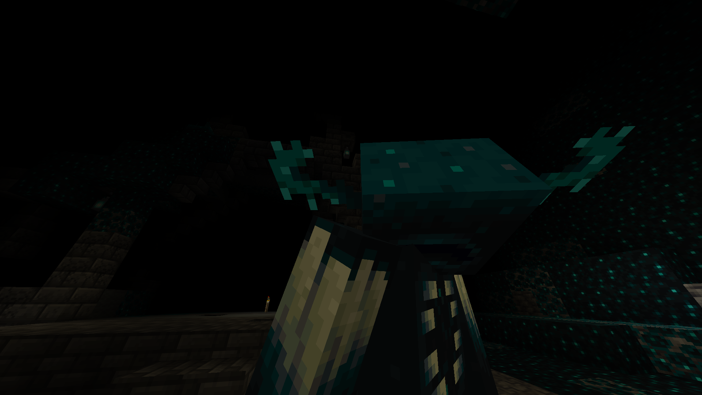
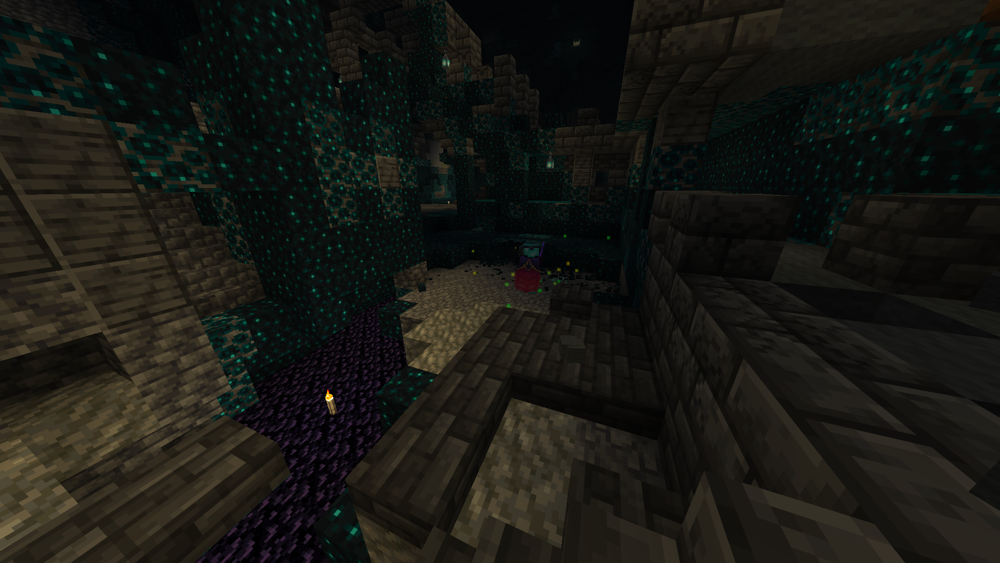

Unidad especializada en limpieza integral de Ancient Cities. Eliminación estratégica de sculk, neutralización controlada de Wardens y restauración estructural sin activación de sensores.
- Limpieza integral de biomas Deep Dark.
- Eliminación estratégica de sculk, bloqueo de sensores y aseguramiento del área.
- Despoblación de criaturas hostiles asegurada.
Ética de trabajo:
Trabajamos en silencio. Herramientas de primera calidad. Sin destrozos estructurales. Protocolos avanzados de infiltración nocturna, contención bioluminiscente y extracción segura de skull para bancos de experiencia.
